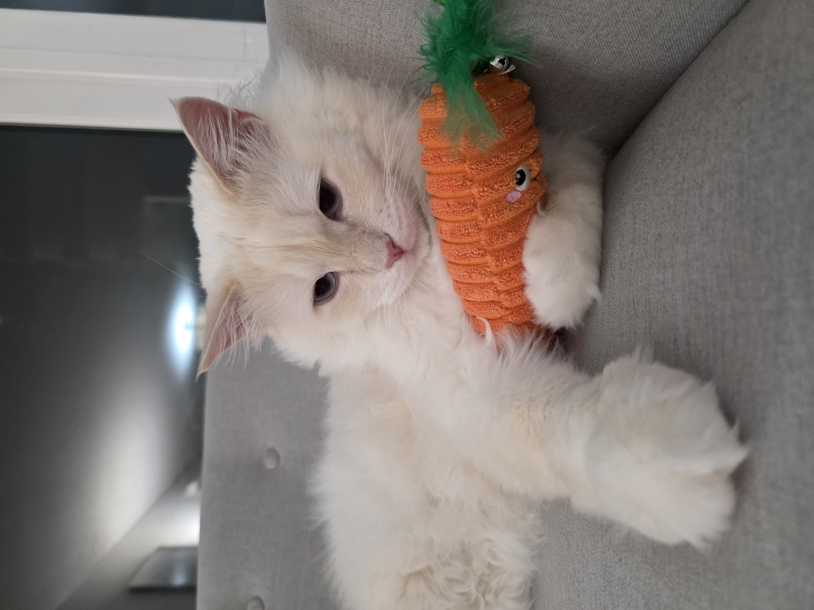
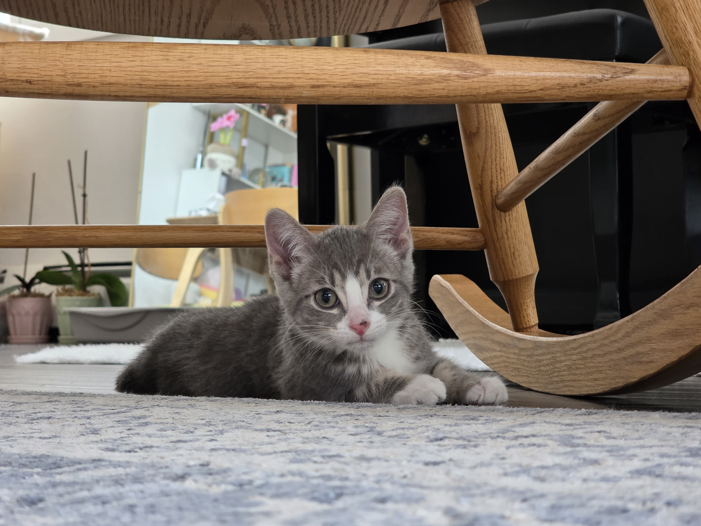
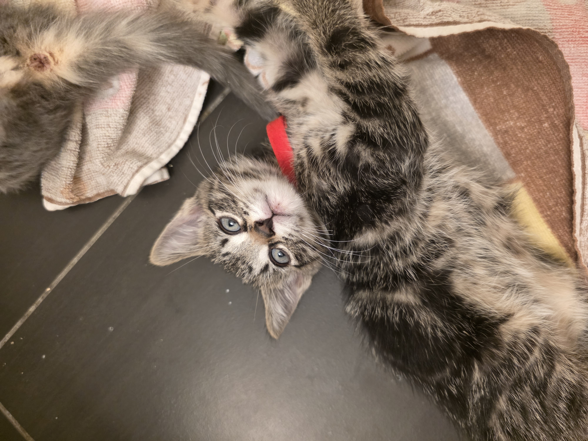
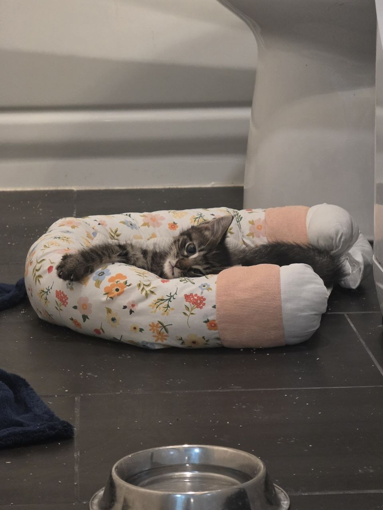
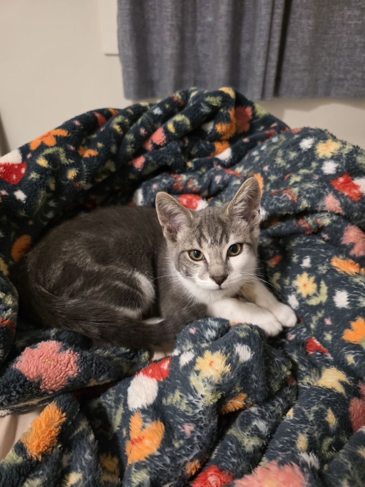
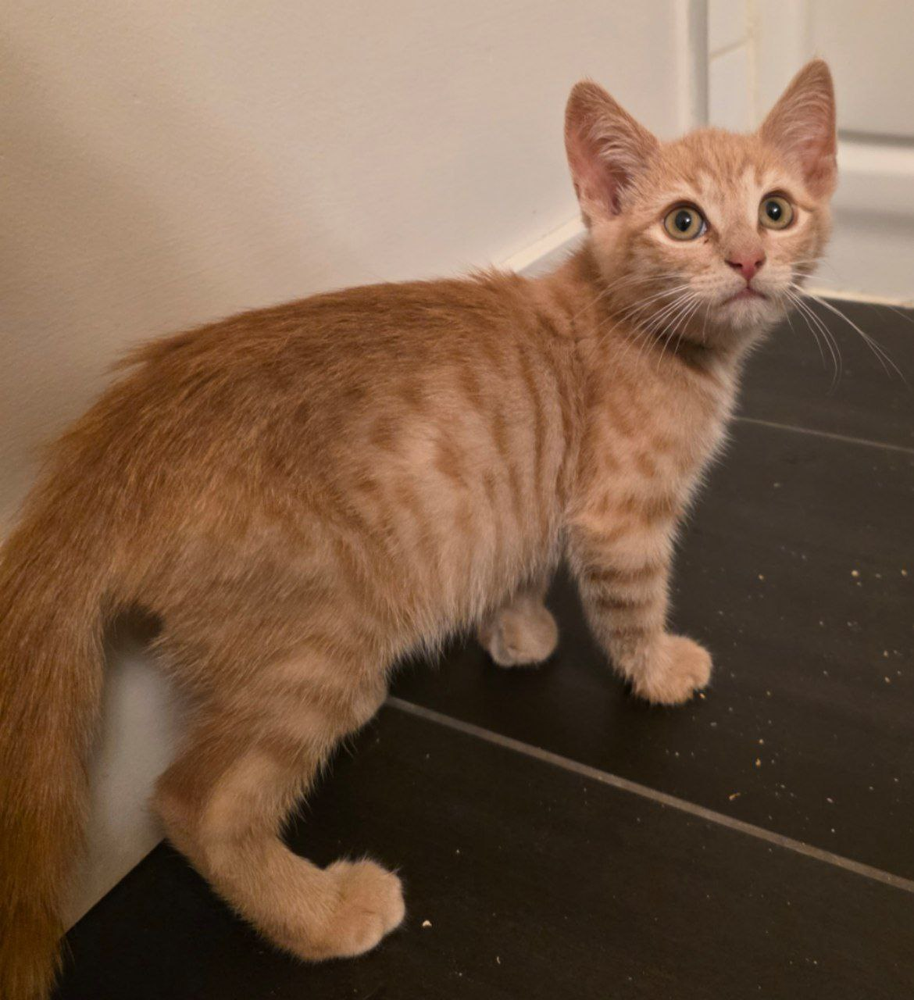
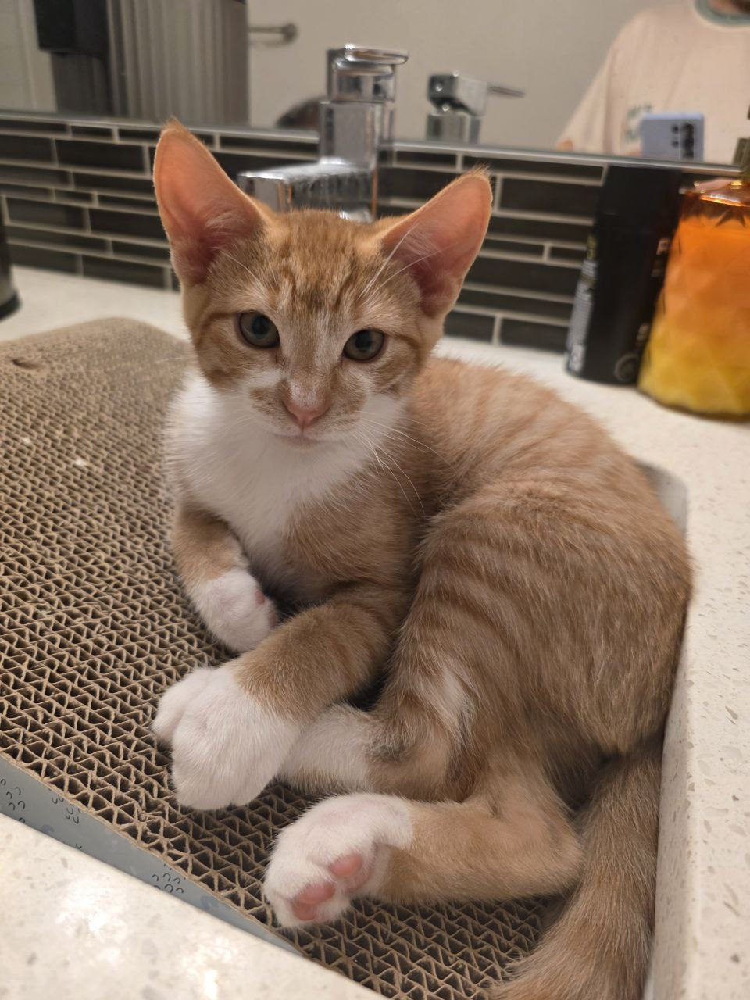
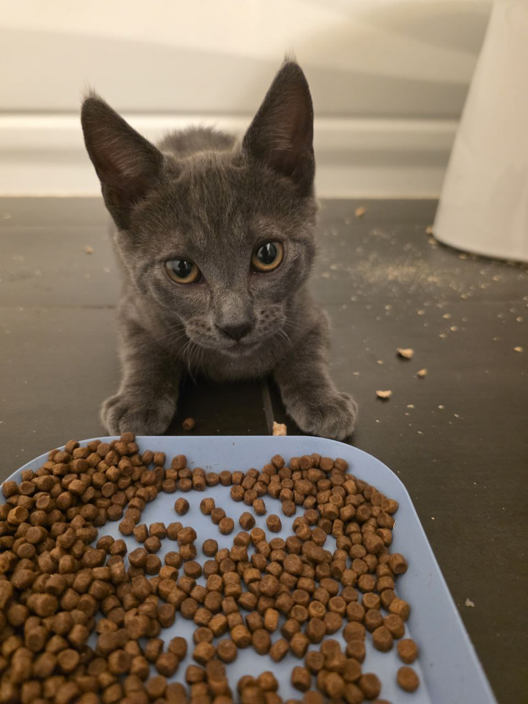
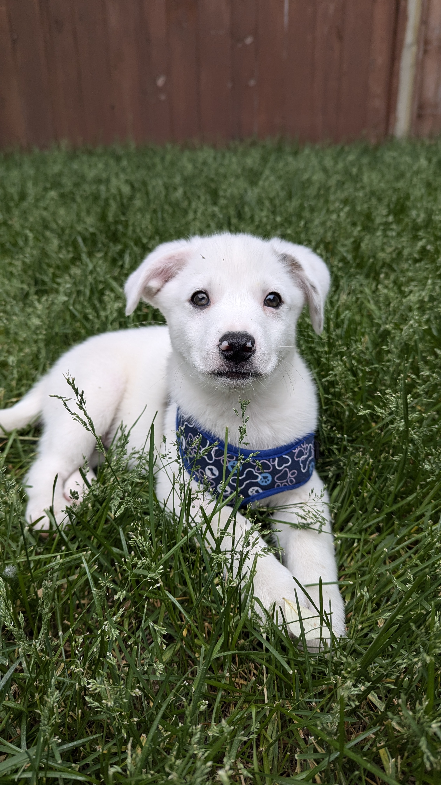

Beyond work · 🐾
The animals in my life
I volunteer with an animal rescue in Calgary and foster cats and dogs while they wait for their forever homes. These are some of the animals who have stayed with us, including one who never left.
Panbeh
Panbeh first came to us as a foster cat. We adopted him, and he is now our much-loved companion.

Foster kittens
Kittens we have cared for while they grew up and got ready for adoption.







Puppy
Puppy had a temporary, caring place to stay while preparing for the next chapter.
